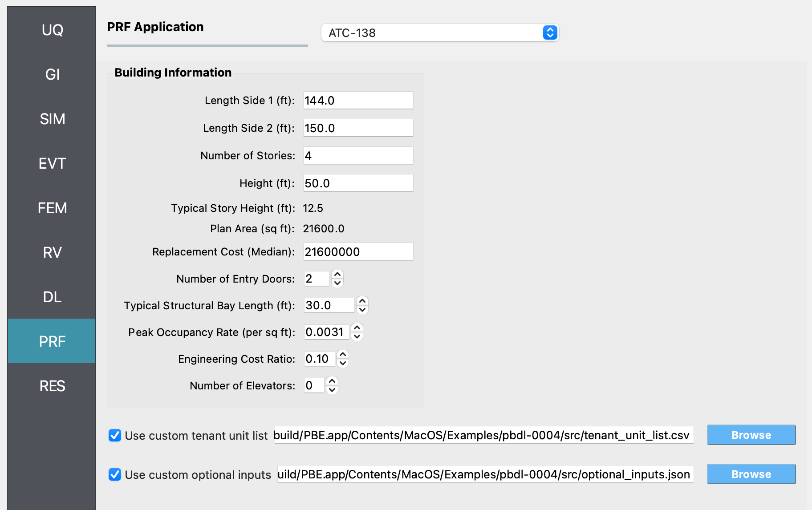
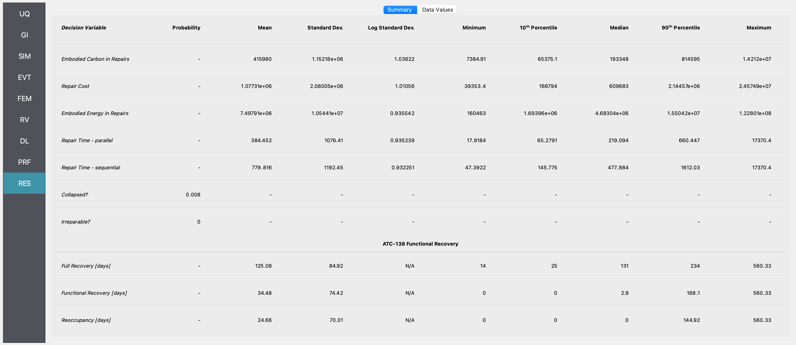

4.4. FEMA P-58 Assessment with ATC-138 Functional Recovery¶
This example extends FEMA P-58 Assessment Using External Demands with an ATC-138 functional recovery assessment. The damage and loss configuration – asset model, component quantities, demand model, damage model, and loss model – is identical to Example 1, so we do not repeat that setup here. Refer to Example 1 for those details.
The rest of this page covers only what differs from Example 1 and
the new ATC-138 configuration. The file input.json contains all
settings for this example; open it from File / Open to populate
the user interface.
4.4.1. Demand input – stripe 2 instead of stripe 4¶
Example 1 uses demands_s4.csv, which corresponds to stripe 4 of
the multi-stripe analysis in the FEMA P-58 background document. For
the functional recovery demonstration we use stripe 2 instead,
stored in demands_s2.csv. Stripe 2 represents a more frequent,
lower-intensity earthquake; that reduces the probability of collapse
and irreparable damage and produces a richer mix of partial damage
states, which exercises the ATC-138 simulation more thoroughly.
4.4.2. PRF – ATC-138 functional recovery¶
The new step is the PRF panel. This example uses the default values throughout the Building Information group – nothing was changed. See the ATC-138 documentation for the meaning of each field.

Fig. 4.4.2.1 The ATC-138 input panel populated for Example 4.¶
The example also enables both optional file inputs to demonstrate their use.
4.4.2.1. Custom tenant unit list¶
Rather than relying on the auto-generated default (one commercial-
office tenant per story spanning the full plan area), this example
ships a custom tenant_unit_list.csv with six tenant units
distributed across the four stories:
id |
story |
area |
perim_area |
occupancy_id |
occupancy type |
|---|---|---|---|---|---|
1 |
1 |
21600 |
7350 |
1 |
Commercial Office |
2 |
2 |
10800 |
3675 |
1 |
Commercial Office |
3 |
2 |
10800 |
3675 |
7 |
Multi-Unit Residential |
4 |
3 |
10800 |
3675 |
1 |
Commercial Office |
5 |
3 |
10800 |
3675 |
7 |
Multi-Unit Residential |
6 |
4 |
21600 |
7350 |
1 |
Commercial Office |
The ground floor (story 1) and the top floor (story 4) are each a
single full-floor commercial office occupying the entire 21,600 sq ft
plan area. Stories 2 and 3 are split equally between a commercial
office tenant and a multi-unit residential tenant, each occupying
half of the plan area. The perim_area column is the exterior
perimeter (elevation) area assigned to each tenant unit – the full
perimeter at story height for full-floor units, half of that for the
half-floor units.
Defining the tenants this way exercises ATC-138’s per-tenant fault tree: commercial-office and multi-unit residential tenants have different functional requirements (e.g., for sanitary water and elevator access), so reoccupancy and functional recovery times can differ between tenants on the same story.
4.4.2.2. Custom optional inputs¶
The bundled optional_inputs.json is a verbatim copy of ATC-138’s
built-in defaults. Loading it does not change any setting, but the
file gives you a complete, ready-to-edit list of every parameter the
assessment exposes – impedance, repair time, and functionality
options. When you want to customize, e.g., the contractor
relationship, the funding source, or workforce caps, start from this
file and edit the relevant entries in place.
4.4.3. Analysis & Results¶
Once the workflow is set up, click Run. When it completes, the
RES panel becomes active. Because ATC-138 is enabled, the
Summary tab shows three additional rows below the damage and
loss results: Reoccupancy [days], Functional Recovery [days],
and Full Recovery [days], each summarized with mean, standard
deviation, percentiles, and bounds.

Fig. 4.4.3.1 Summary of damage, loss, and ATC-138 functional recovery results for Example 4.¶